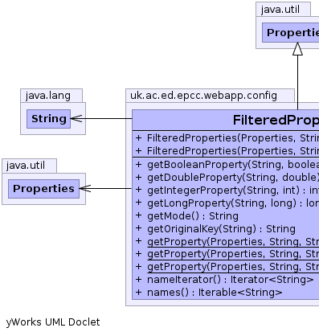

public class FilteredProperties
extends java.util.Properties
Simple class to help prepare properties for a particular application.
Different applications set properties via the AppContext's
ConfigService. To differentiate them from other properties, these
properties usually start with some kind of identifier (for example, all
properties starting with class. hold values of classes that can be
loaded at runtime). This object takes either a Properties object
or and AppContext (from which it extract's the configuration
properties) and populates itself with all the properties whose keys start
with the specified base string. Once constructed, this object will hold all
the properties specific to the application that created it.
FilteredProperties also features the concept of a mode.
The idea is that an application will function differently depending on which
mode it is in. Properties may be set on a mode by
mode basis or a global basis (applies to all modes).
FilteredProperties assumes the property is defined in the
following form.
base.mode.prop_keyThe base is stripped out during construction so the property keys in a
FilteredProperties object don't contain the base. When searching
for properties, FilteredProperties checks to see if the property
is set for the specified mode. If there isn't one specifically set, or
mode has not been set, the property with the key specified is
returned. For example suppose we construct a FilteredProperties
object with the current properties (in an object called myProperties
):
myapp.prop1 = val1using the constructor
myapp.mode1.prop2 = val2
myapp.mode2.prop2 = val3
FilteredProperties props = new FilteredProperties(myProperties, "myapp", "mode2");In this case, the following statements would be true:
props.getProperty("prop1") == "val1";<\br> props.getProperty("prop2") == "val3";<\br>
|  |
| Constructor and Description |
|---|
FilteredProperties(java.util.Properties properties,
java.lang.String base)
Constructs a new
FilteredProperties based on extracting all
properties from the provided Properties object whose keys
begin with the specified base string. |
FilteredProperties(java.util.Properties properties,
java.lang.String base,
java.lang.String mode)
Constructs a new
FilteredProperties based on extracting all
properties from the provided Properties object whose keys
begin with the specified base string. |
| Modifier and Type | Method and Description |
|---|---|
boolean |
getBooleanProperty(java.lang.String name,
boolean def)
Check for a boolean parameter yes/on/true or no/off/false
|
double |
getDoubleProperty(java.lang.String name,
double def) |
int |
getIntegerProperty(java.lang.String name,
int def) |
long |
getLongProperty(java.lang.String name,
long def) |
java.lang.String |
getMode()
Returns the default mode being used by this object.
|
java.lang.String |
getOriginalKey(java.lang.String filteredKey)
If
filteredKey is a property key for this properties object,
this method returns what the corresponding key that would be used to
extract the same property from the original properties used to construct
this object. |
static java.lang.String |
getProperty(java.util.Properties properties,
java.lang.String base,
java.lang.String mode)
Attempts to return a property value from the specified
Properties object with the name base.mode. |
static java.lang.String |
getProperty(java.util.Properties properties,
java.lang.String base,
java.lang.String mode,
java.lang.String key)
Attempts to return a property value from the specified
Properties object with the name base.mode.key. |
static java.lang.String |
getProperty(java.util.Properties properties,
java.lang.String base,
java.lang.String mode,
java.lang.String key,
java.lang.String defaultVal)
Attempts to return a property value from the specified
Properties object with the name base.mode.key. |
java.util.Iterator<java.lang.String> |
nameIterator()
Convenience property name iterator method.
|
getProperty, getProperty, list, list, load, load, loadFromXML, propertyNames, save, setProperty, store, store, storeToXML, storeToXML, stringPropertyNamespublic FilteredProperties(java.util.Properties properties,
java.lang.String base)
FilteredProperties based on extracting all
properties from the provided Properties object whose keys
begin with the specified base string. The base string along
with the dot that should follow it will be stripped off all property keys.
The mode is not set.properties - The AppContext to extract properties frombase - All properties that begin with this string will be extractedpublic FilteredProperties(java.util.Properties properties,
java.lang.String base,
java.lang.String mode)
FilteredProperties based on extracting all
properties from the provided Properties object whose keys
begin with the specified base string. The base string along
with the dot that should follow it will be stripped off all property keys.
When fetching properties, properties that begin with the specified
mode will take presidence.properties - The AppContext to extract properties frombase - All properties that begin with this string will be extractedmode - The default mode.public java.lang.String getMode()
Properties.getProperty(String)public java.lang.String getOriginalKey(java.lang.String filteredKey)
If filteredKey is a property key for this properties object,
this method returns what the corresponding key that would be used to
extract the same property from the original properties used to construct
this object. The original key would have started with this object's
base and may have contained the mode. This method
only makes sense for values that are keys of this object and properties
that were extracted from the original Properties object
provided at construction time (if an AppContext was provided,
the Properties object would have been extracted from it via
it's ConfigService.
If the underlying properties contained in the original
Properties object have been removed, this method will fail to
produce the correct result. It is intended to provide more useful
information for error messages and may not be reliable for other purposes.
filteredKey - A key for this Properties object pointing to a
property extracted from the original Properties
object.Properties object. null can be returned
if filteredKey is not a key for this
Properties object or the property extracted from the
original Properties object has since been removed.public java.util.Iterator<java.lang.String> nameIterator()
Iterator objects
are nicer than Enumeration objects. This method wraps the
Enumeration object generated for iterating over property names
in this object in an Iterator to make using it easier.public boolean getBooleanProperty(java.lang.String name,
boolean def)
name - String name of paameterdef - boolean default if it does not exist.public double getDoubleProperty(java.lang.String name,
double def)
public int getIntegerProperty(java.lang.String name,
int def)
public long getLongProperty(java.lang.String name,
long def)
public static java.lang.String getProperty(java.util.Properties properties,
java.lang.String base,
java.lang.String mode)
Properties object with the name base.mode. If such a
property does not exist, the property value with name base is
returnedproperties - The Properties object to fetch the value frombase - The base of the propertymode - The optional mode of the propertynull is returned.public static java.lang.String getProperty(java.util.Properties properties,
java.lang.String base,
java.lang.String mode,
java.lang.String key)
Properties object with the name base.mode.key. If
such a property does not exist, the property value with name
base.key is returned.properties - The Properties object to fetch the value frombase - The base of the propertymode - The optional mode of the propertykey - The end string of the propertynull is
returned.public static java.lang.String getProperty(java.util.Properties properties,
java.lang.String base,
java.lang.String mode,
java.lang.String key,
java.lang.String defaultVal)
Properties object with the name base.mode.key. If
such a property does not exist, the property value with name
base.key is returned if it exists. It doesn't,
defaultVal is returned.properties - The Properties object to fetch the value frombase - The base of the propertymode - The optional mode of the propertykey - The end string of the propertydefaultVal - The value to return if no property could be founddefaultVal is returned.